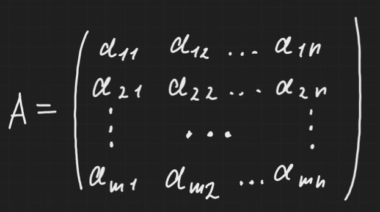
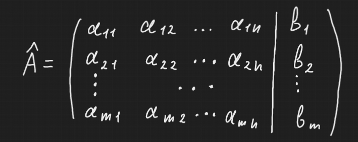

Расширенная матрица системы - это матрица системы, которая помимо коэффициентов при неизвестных содержит еще свободные коэффициенты, писать черту перед свободными коэффициентами не обязательно, она для наглядности:

Это матрица охватывает уже всю информацию о системе.